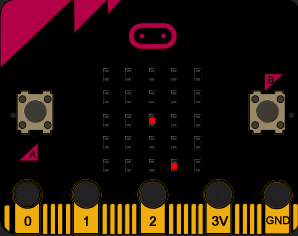

Objets connectés⚓︎
0. Présentation de la carte BBC micro:bit⚓︎
BBC micro:bit est une carte à microcontrôleur conçue en 2015 au Royaume-Uni pour développer l'apprentissage de l'algorithmique et de la programmation.

La carte micro:bit dispose des spécificités techniques suivantes :
- 25 LEDs programmables individuellement
- 2 boutons programmables
- Broches de connexion
- Capteurs de lumière et de température
- Capteurs de mouvements (accéléromètre et boussole)
- Communication sans fil, via Radio et Bluetooth
- Interface USB
1. "Hello world !", virtuellement ou IRL...⚓︎
1.1 À distance ? Pas de micro:bit ? le simulateur est là !⚓︎
Rendez-vous sur la page https://python.microbit.org/v/3
Cliquez sur le bouton Play de la micro:bit virtuelle. C'est parti !

Pour éviter des erreurs, fermez la fenêtre de droite (le simulateur) à chaque fois que vous modifiez votre code de la partie gauche.
1.2 Avec une micro:bit réelle⚓︎
La manipulation suivante ne marche que sur le navigateur Google Chrome.
- Branchez la carte sur un port USB. Un lecteur MICROBIT apparait dans les périphériques USB.
- Rendez-vous sur l'adresse https://python.microbit.org/v/3
- Modifiez le code présent puis cliquez sur le bouton Play de la micro:bit virtuelle.
- Cliquer sur le bouton violet «Send to micro:bit».
Cette procédure est à répéter à chaque nouveau code.
2. Découverte des fonctionnalités⚓︎
2.1 Explication du code par défaut⚓︎
code par défaut du simulateur
1 2 3 4 5 6 7 8 | |
- Les lignes précédées de # sont des commentaires : elles ne servent qu'à expliquer le code, on peut les enlever.
from microbit import *est une ligne qui devra toujours être au début du code : elle sert à importer des fonctions spécifiques à la micro:bitwhile True:est ce qu'on appelle une boucle infinie. Tout ce qui est sous ce code (indenté) sera répété infiniment.display.show(Image.HEART)permet d'afficher l'image (ou plutôt les pixels...) qui forment un cœur.sleep(1000)permet de mettre en pause le programme pendant 1000 millisecondes, donc 1 seconde.display.scroll('Hello')permet de faire défiler le texteHello.
Exercice 1
Modifier le code précédent pour que la carte affiche alternativement un cœur et un parapluie (umbrella en anglais)
Liste des images disponibles
1 2 3 4 5 6 7 8 9 10 11 12 13 14 15 16 17 18 19 20 21 22 23 24 25 26 27 28 29 30 31 32 33 34 35 36 37 38 39 40 41 42 43 44 45 46 47 48 49 50 51 52 53 54 55 56 57 58 59 60 61 62 63 | |
Créer sa propre image⚓︎
Chaque pixel LED sur l’affichage physique peut prendre une parmi dix valeurs. Si un pixel prend la valeur 0 c’est qu’il est éteint. Littéralement, il a une luminosité de zéro. En revanche, s’il prend la valeur 9 il est à la luminosité maximale. Les valeurs de 1 à 8 représentent des niveaux de luminosité entre éteint (0) et « au maximum » (9).
1 2 3 4 5 6 7 8 9 | |
Comment dessiner une image? Chaque ligne de l’affichage physique est représentée par une ligne de nombres se terminant par : et entourée de guillemets doubles ". Chaque nombre indique une luminosité. Il y a cinq lignes de cinq nombres donc il est possible de spécifier la luminosité individuelle de chacune des cinq LED sur chacune des cinq lignes sur l’affichage physique. C’est ainsi que l'on crée une image.
Exercice 2
Créer une image de pierre, de feuille et de ciseaux. Ces images seront à sauvegarder dans un fichier Python afin que nous puissions nous en resservir dans un autre exercice.
2.1.3 Les pixels (display.set_pixel(x, y, val))⚓︎
Vous pouvez régler la luminosité des pixels de l'affichage individuellement de 0 (désactivé) à 9 (luminosité maximale). Pour des informations sur les coordonnées de l'affichage, voir le guide pour matrice à LED.
Exécuter le programme suivant:
1 2 | |
Exercice 3
Faire clignoter un pixel.
Avec un peu d'aléatoire (voir documentation sur le hasard)⚓︎
Dans le programme suivant que vous exécuterez, on importe randint du module random de MicroPython et on l'utilise pour afficher un pixel au hasard sur la matrice.
L'instruction randint(0,4) va renvoyer un nombre (pseudo-)aléatoire entre 0 et 4 inclus.
1 2 3 4 5 6 | |
Tester le programme précédent plusieurs fois de suite. Pour cela, redémarrer la micro:bit en appuyant sur le bouton RESET situé à l'arrière de la carte.
2.3 Boucle for⚓︎
Le programme suivant utilise une boucle for pour faire défiler un pixel sur une ligne.
Grâce à l'expression for i in range(5):, la variable i va prendre successivement les valeurs 0, 1, 2, 3 et 4. (pas 5 !)
1 2 3 4 5 6 | |
Exercice 4
Faire «pulser» le pixel central en augmentant progressivement sa luminosité, de 0 à 9.
Exercice 5
Même exercice mais en augmentant puis en diminuant progressivement sa luminosité.
2.4 Les entrées boutons A, B et A+B - programmation événementielle (vidéo explicative)⚓︎

Il y a deux boutons sur la face avant du micro:bit (étiquetés A et B). On peut détecter quand ces boutons sont pressés, ce qui permet de déclencher des instructions sur l'appareil.
Exemples avec le boutton A:
button_a.is_pressed(): renvoie True si le bouton spécifié est actuellement enfoncé et False sinon.button_a.was_pressed(): renvoie True ou False pour indiquer si le bouton a été appuyé depuis le démarrage de l'appareil ou la dernière fois que cette méthode a été appelée. C'est cette instruction que nous allons utiliser.
Exemple : Essayer le programme suivant qui fait défiler le texte "SNT" indéfiniment. On introduit l'instruction conditionnelle if qui va tester si le bouton A a été pressé (pendant le défilement du texte ou pendant la pause), auquel cas le programme s'arrête en exécutant la commande break.
1 2 3 4 5 6 7 | |
Exercice 6
Créer le code permettant de basculer d'un visage triste à un visage heureux suivant qu'on appuie sur A ou sur B.

1 2 3 4 5 6 | |
2.5 Détection du mouvement de la carte : vers le Pierre-Feuille-Ciseaux⚓︎
Observer et exécuter le code suivant :
1 2 3 4 5 6 | |
Nous sommes donc maintenant prêts à faire un Pierre-Feuille-Ciseaux qui se déclenchera lors du secouage de la carte.
Exercice 7
Créer un jeu de Pierre-Feuille-Ciseaux qui se déclenchera lorsqu'on secoue la Microbit.

La détection du "secouage" de la carte se fera avec l'instruction suivante :
1 2 | |
1 2 3 4 5 6 7 8 9 10 11 12 13 14 15 16 17 18 19 | |
1 2 3 4 5 6 7 8 9 10 11 12 13 14 15 16 17 | |
Exercice 8
On veut créer le code permettant de déplacer un point vers la gauche ou vers la droite en appuyant sur A ou sur B.

1 2 3 4 5 6 7 8 9 | |
Exercice 9
Même chose mais en faisant parcourir tout l'écran au pixel :
- si on sort à droite, on se décale d'une ligne vers le bas et on revient tout à gauche.
- si on sort à gauche, on se décale d'une ligne vers le haut et on revient tout à droite.
1 2 3 4 5 6 7 8 9 10 11 12 13 14 15 16 17 18 19 20 21 22 | |
Exercice 10 : un jeu !
On veut créer le jeu suivant :
- au démarrage, un pixel aléatoire est placé sur l'écran : c'est la cible à atteindre.
- il faut ensuite se déplacer un point vers la gauche ou vers la droite en appuyant sur A ou sur B.
- lorsque qu'on a rejoint la cible, un emoji HAPPY apparait.

1 2 3 4 5 6 7 8 9 10 11 12 13 14 15 16 17 18 19 20 21 22 23 24 25 26 | |
 Gestion du temps
Gestion du temps
La fonction tick_ms du module utime renvoie le nombre de millisecondes écoulées depuis le démarrage de la carte. Pour mesurer le temps écoulé dans un programme, on fixe le temps du début du programme dans une variable t0. Il suffit d'observer ensuite la valeur de tick_ms() - t0 pour savoir combien de temps (en millisecondes) s'est écoulé depuis le début du programme.
Exemple (à exécuter pour comprendre !) :
1 2 3 4 5 6 7 8 9 10 | |
Exercice 11
Reprendre l'exercice précédent, en rajoutant un temps limité : il faut rattraper le pixel avant que le temps soit écoulé.